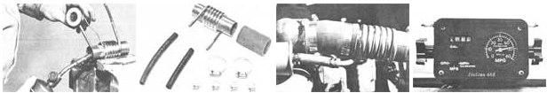

STAFF PHOTOS
Wrap the soft copper line tightly around the pipe and solder a continuous bead at the ends (clean both copper surfaces thoroughly to assure a solid joint)...Here are all the components you 71 need to complete the job...Splice the preheater into your upper radiator hose, and join the fuel line to the coil as shown...The flow meter installed in MOTHER's alcohol-powered truck (which registers either gallons per hour, miles per gallon, or miles per hour depending on its setting) indicates that fuel consumption is about 4.8 gallons per hour-or 11.4 miles per gallon?at 55 MPH.